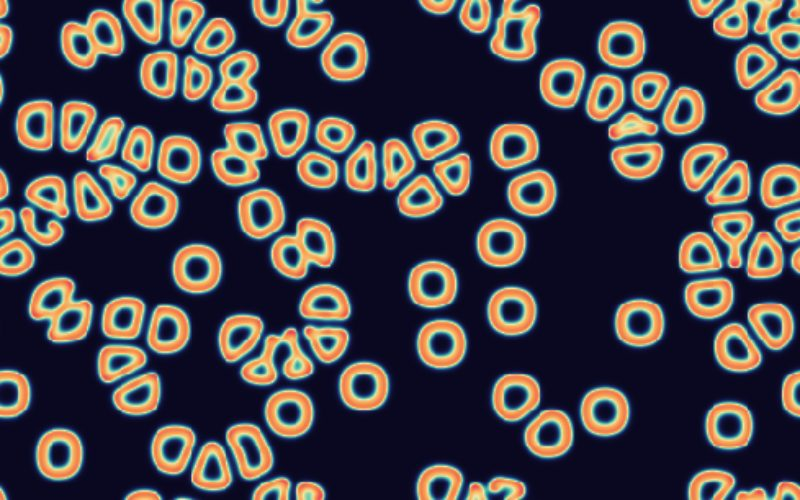
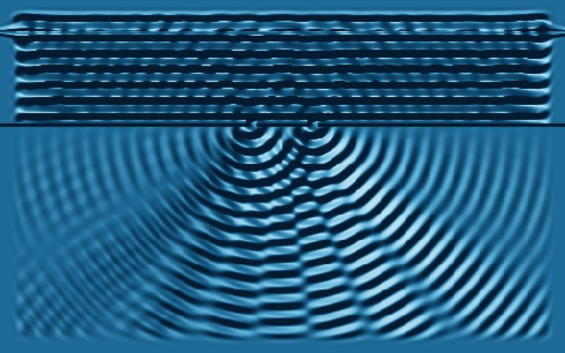

Python on the GPU
Each demo below is a simulation written as a plain Python function. When the site is built, a small compiler called pykernel turns those functions into WebGPU compute shaders, and your browser runs them on your graphics card.
No Python runs in the browser: the page ships the generated shaders and a small JavaScript host. The functions are still ordinary Python, so before each page starts it runs one step on the GPU and compares the result with what CPython computed for the same input. The green line in each panel reports that comparison.
Mandelbrot
Zoom into the set; one Python call per pixel, every frame you move.

Reaction–diffusion
Gray–Scott chemistry growing coral, worms and mitosis. Draw to seed it.
Colliding galaxies
Thousands of stars, every pair's gravity summed each step.

Ripple tank
The wave equation: rain, your fingers and a double slit.
Python in, WGSL out
This is the Mandelbrot demo's kernel exactly as the build reads it, and the shader pykernel wrote from it. The function's first argument is the invocation index. list[float] arguments become storage buffers, and int and float arguments become a uniform block. Local types are inferred.
loading…
loading…
What the compiler accepts
The accepted subset is scalar code over flat float buffers: arithmetic, comparisons, if, while, for … in range(), break and continue, plus min, max, abs, floor, sqrt, exp, log, pow and the trigonometric functions. Anything else is refused with the line number and the construct it didn't accept. Each call handles one element, so a simulation step is a function of one cell, one pixel or one star. The GPU computes in 32-bit floats where CPython uses 64, which is why the startup check allows a small tolerance and why the Mandelbrot zoom stops at about a million times.
pykernel is about 800 lines of standard-library Python. It came out of a benchmark of ways to run Python in the browser, where the route that compiled typed Python to flat buffers ran 6 to 63 times faster than shipping the CPython interpreter compiled to WebAssembly. The source for these pages includes the compiler, the kernels and the build script.
Needs a browser with WebGPU: current Chrome, Edge or Safari, or Firefox on Windows and macOS.